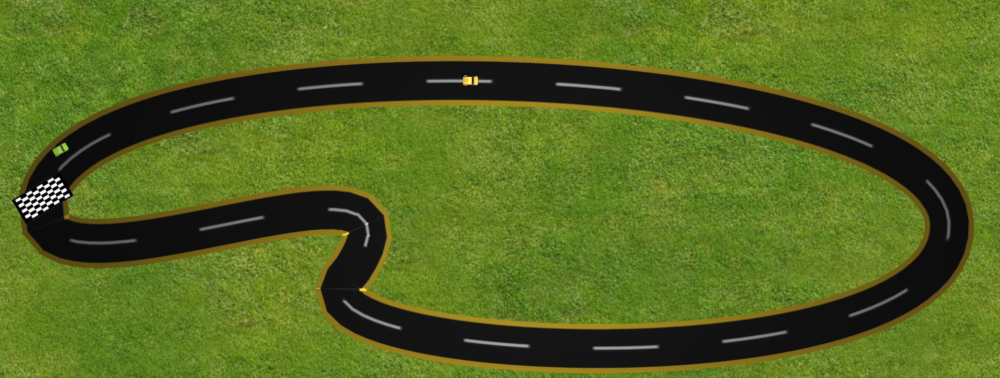

Bezier Racer
Il seguente progetto è stato realizzato per il corso di "Geometria Computazionale" dell'Università Degli Studi di Milano.
Questo è un semplice gioco di corse, dove dovremmo gareggiare contro un avversario lungo un percorso costruito tramite curve di Bezier.
Lo scopo è quello di creare un editor per tracciati sfruttando le curve di Bezier e successivamente correre nel tracciato creato.
Ogni gara è composta da un unico giro.
L'applicazione è stata realizzata mediante il software UNITY 3D.
